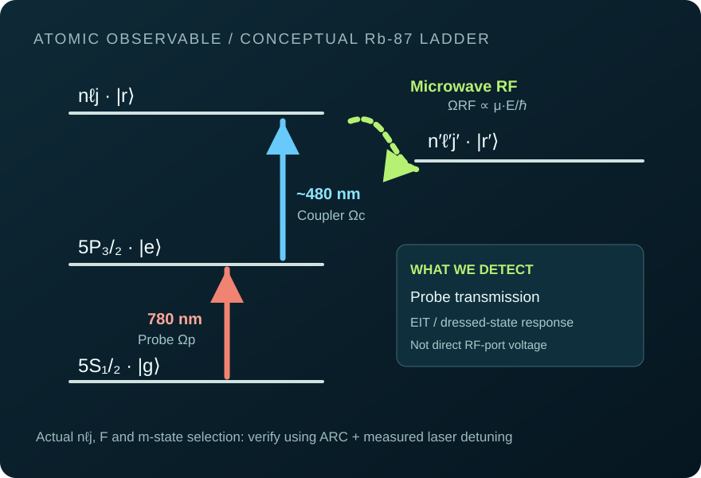

Turn the physics.
See what changes.
An interactive teaching workbench for the same quantum and RF principles used throughout the Rydberg sensing programme. Curves and parameter sliders use declared analytical models; they are not imported laboratory data, not a fresh HFSS solve and not a substitute for a complete RydIQule ensemble calculation.
Explore the equations ↘
Live weak-probe four-level response
At each detuning, evaluate a phenomenological nested susceptibility-like response for a ladder plus an RF-coupled state. All angular-frequency terms share the same MHz convention, so the formula is dimensionally consistent. The plotted signal is dimensionless normalised absorption, not measured probe transmission.
Dr = γgr − iΔ + ΩRF2/(4Ds)
De = γge − iΔ + Ωc2/(4Dr)
A(Δ) = γge · Re(1/De)
This simplified weak-probe, equal-detuning model omits velocity classes, hyperfine structure, optical depth and saturation. Use RydIQule for physically parameterised spectra.
RF, atomic and optical calculation bench.
These values are computed from exact SI constants and the selected hypothetical parameters. An actual Rb-87 transition needs ARC's state-specific dipole value and independent experimental calibration.
Edit code. Run it in the browser.
This executes user-written JavaScript inside a sandboxed, opaque-origin iframe with network connections blocked and a run timeout. It cannot control actual lab instruments, read a file system or run Ansys HFSS. ARC/RydIQule are Python scientific packages; use the copyable Python examples from the handbook in a local environment.
A run receives no network permission, but can still consume CPU until the watchdog ends it; do not paste secrets.
Choose an example and press Run.
Run full models locally
ARC, RydIQule and PyAEDT are not browser packages here. Consult the versioned step-by-step tutorial labs and exact software documentation.
What the computer cannot prove.
These idealised examples are a teaching aid. The actual 1.925 GHz HFSS six-state matrix, 3×3 finite-panel failures and original laboratory measurements must always be inspected from their own native sources.